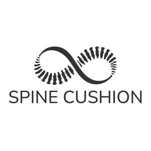

Trade Mark Journal No.2025/031 1 August 2025
UK00004238600 23 July 2025 (10,20)

- Class 10
- Orthopedic cushions; Orthopaedic foot cushions; Padded neck supports [cushions] for surgical use; Spine seats [medical apparatus]; Pressure relief pads and cushions; Padded cushions for medical purposes; Contoured cushions for patients' use on chairs [adapted for medical purposes]; Contoured cushions for patients' use on beds [adapted for medical purposes]; Cushions for medical use, adapted to support the face; Inflatable cushions for medical use; Cushions [pads] (heating -), for medical purposes; Massage apparatus for neck and shoulders; Air cushions for medical purposes; Inflatable cushions for medical purposes; Medical apparatus for strengthening muscles of the pelvic floor; Padded neck supports for surgical use; Pillows for orthopedic use; Foam massage rollers; Heating cushions [pads], electric, for medical purposes; Padding for orthopedic casts; Contoured inflated pads for patients; Cervical pillows for medical use.
- Class 20
- Neck support cushions; Cushions; Inflatable neck support cushions; Seat cushions; Chair cushions; Air cushions; Neck pillows; Inflatable pillows [other than for medical use] for fitting around the neck; Protective pads, not of metal, for chair legs; Nap mats [cushions or mattresses]; Memory foam pillows; Mattress pads; Chair pads; Neck pillows [other than for medical or surgical use]; Seat covers [shaped] for furniture; Cushions [furniture]; Seat pads; Soft furnishings [cushions]; Support pillows for use in baby seating; Inflatable cushions, other than for medical purposes; U-shaped pillows; Support pillows for use in baby car safety seats; Seat pads being parts of furniture.
Mielec Solutions Ltd